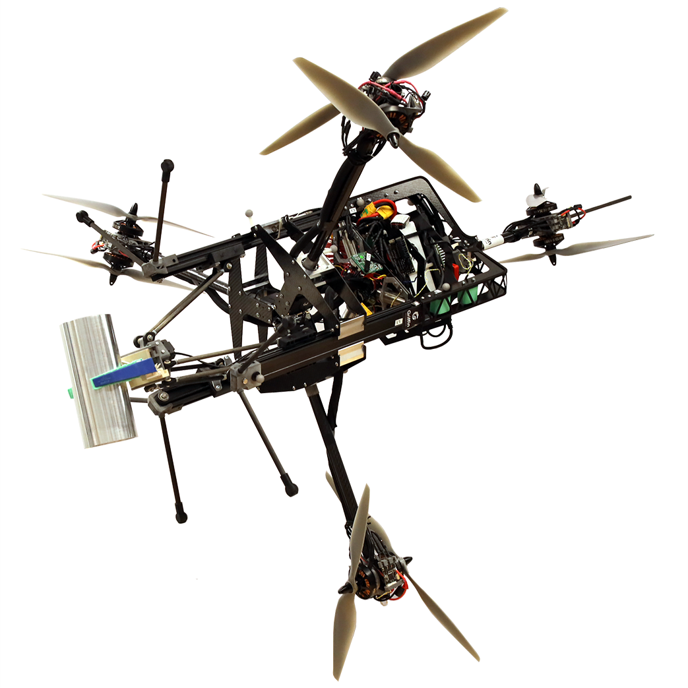

BSc in Mech. Eng.BSc Mechanical Engineering
I graduated in the top two percentile of my class with a GPA of 5.54. View my Bachelor's transcript, graduation diploma and graduation statistics here. Below are the main projects I did during my Bachelor's degree.
Focus Project Griffin
In the third year of my Bachelor's, I participated in the Focus Project Griffin. Over the course of a year, our team of eight built an aerial manipulator with a parallel robotic arm from the ground up. Major learnings and contributions:
- Start-up thinking: Project pitches, fund acquisition, development of strategy and vision, quick and effective prototyping
- Leadership: Project team lead and management
- System modeling & control: Flight controller, motor allocation, system dynamics
- Programming: C++, Python, ROS, CAD, Gazebo, LaTeX
- Practical skills: 3D printing, lasercutting, wire soldering, motor tuning, drone assembly
Visit our project website for more details.

- Publication of conference paper at International Conference on Unmanned Aerial Systems (ICUAS)
- Awarded Best Paper
- Aerial manipulator combines omnidirectional floating base with a parallel robot arm
- Coaxial tiltable propeller groups enable flight in any pose
- Robot arm compensates positional error of floating base
- Object grasp with adaptive fingers
See PrisMAV do aerial manipulation missions in the videos below:
- Project presentation at Focus Rollout:
Bachelor Thesis & Innovation Project
- Object detection and grasp planning pipeline thesis for aerial manipulator from focus project
- Knowledge acquired with OpenCV, Python, Gazebo
- Developed catapulting robot with four other students
- CAD, lasercutting and LabView skills acquired
- Teamwork and project planning
- See the robot autonomously load and shoot object into bin: